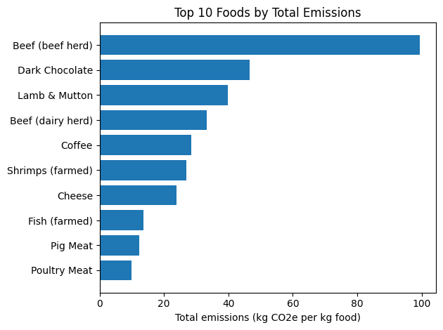
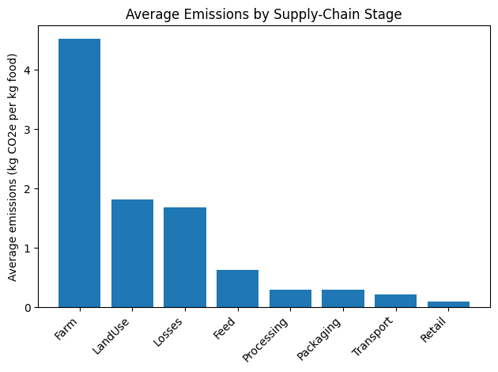
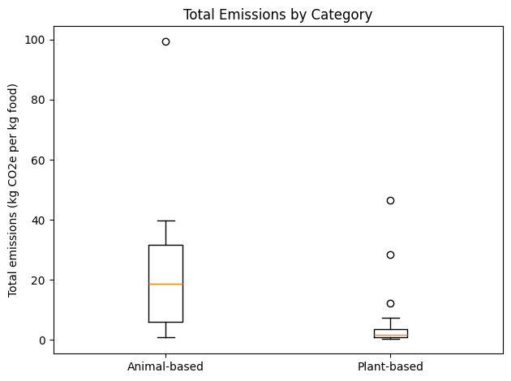

import pandas as pd
import matplotlib.pyplot as plt
df = pd.read_csv("food-emissions-supply-chain.csv")DATS 2102 - Homework 4
Dataset: Greenhouse Gas Emissions Across the Supply Chain
print(df.shape)
print(df.head())
print(df.info())(43, 11)
Entity Code Year food_emissions_land_use \
0 Apples NaN 2018 -0.028951
1 Bananas NaN 2018 -0.025534
2 Barley NaN 2018 0.008676
3 Beef (beef herd) NaN 2018 23.237536
4 Beef (dairy herd) NaN 2018 1.266022
food_emissions_farm food_emissions_animal_feed food_emissions_processing \
0 0.225816 0.000000 0.003820
1 0.269618 0.000000 0.060146
2 0.176377 0.000000 0.127703
3 56.228063 2.680979 1.811083
4 21.915529 3.503673 1.547664
food_emissions_transport food_emissions_retail food_emissions_packaging \
0 0.095804 0.016578 0.044526
1 0.295830 0.020981 0.065670
2 0.035351 0.263587 0.496786
3 0.494125 0.233538 0.352084
4 0.592410 0.254032 0.374549
food_emissions_losses
0 0.070808
1 0.175185
2 0.070692
3 14.439998
4 3.847515
<class 'pandas.core.frame.DataFrame'>
RangeIndex: 43 entries, 0 to 42
Data columns (total 11 columns):
# Column Non-Null Count Dtype
--- ------ -------------- -----
0 Entity 43 non-null object
1 Code 0 non-null float64
2 Year 43 non-null int64
3 food_emissions_land_use 43 non-null float64
4 food_emissions_farm 43 non-null float64
5 food_emissions_animal_feed 43 non-null float64
6 food_emissions_processing 43 non-null float64
7 food_emissions_transport 43 non-null float64
8 food_emissions_retail 43 non-null float64
9 food_emissions_packaging 43 non-null float64
10 food_emissions_losses 43 non-null float64
dtypes: float64(9), int64(1), object(1)
memory usage: 3.8+ KB
Nonedf = df.drop(columns=["Code"])num_cols = df.select_dtypes(include="number").columns
df[num_cols] = df[num_cols].clip(lower=0)
df = df.rename(columns={
"Entity": "Food",
"food_emissions_land_use": "LandUse",
"food_emissions_farm": "Farm",
"food_emissions_animal_feed": "Feed",
"food_emissions_processing": "Processing",
"food_emissions_transport": "Transport",
"food_emissions_retail": "Retail",
"food_emissions_packaging": "Packaging",
"food_emissions_losses": "Losses"
})
df["Total"] = df[["LandUse","Farm","Feed","Processing","Transport","Retail","Packaging","Losses"]].sum(axis=1)
df.head()| Food | Year | LandUse | Farm | Feed | Processing | Transport | Retail | Packaging | Losses | Total | Category | |
|---|---|---|---|---|---|---|---|---|---|---|---|---|
| 0 | Apples | 2018 | 0.000000 | 0.225816 | 0.000000 | 0.003820 | 0.095804 | 0.016578 | 0.044526 | 0.070808 | 0.457352 | Plant-based |
| 1 | Bananas | 2018 | 0.000000 | 0.269618 | 0.000000 | 0.060146 | 0.295830 | 0.020981 | 0.065670 | 0.175185 | 0.887430 | Plant-based |
| 2 | Barley | 2018 | 0.008676 | 0.176377 | 0.000000 | 0.127703 | 0.035351 | 0.263587 | 0.496786 | 0.070692 | 1.179171 | Plant-based |
| 3 | Beef (beef herd) | 2018 | 23.237536 | 56.228063 | 2.680979 | 1.811083 | 0.494125 | 0.233538 | 0.352084 | 14.439998 | 99.477405 | Animal-based |
| 4 | Beef (dairy herd) | 2018 | 1.266022 | 21.915529 | 3.503673 | 1.547664 | 0.592410 | 0.254032 | 0.374549 | 3.847515 | 33.301395 | Animal-based |
stage_cols = ["LandUse","Farm","Feed","Processing","Transport","Retail","Packaging","Losses"]
df["Total"] = df[stage_cols].sum(axis=1)# Categorize foods (Animal vs Plant)
animal_keywords = ["Beef","Lamb","Mutton","Cheese","Milk","Poultry","Chicken","Turkey",
"Pork","Fish","Egg","Eggs","Shrimps","Shrimp","Crustaceans"]
def categorize_food(name: str) -> str:
upper = name.upper()
return "Animal-based" if any(kw.upper() in upper for kw in animal_keywords) else "Plant-based"
df["Category"] = df["Food"].apply(categorize_food)group1 = (df.groupby("Category")
.agg(
foods=("Food","count"),
total_mean=("Total","mean"),
total_median=("Total","median"),
total_sum=("Total","sum")
)
.sort_values("total_mean", ascending=False))
group1| foods | total_mean | total_median | total_sum | |
|---|---|---|---|---|
| Category | ||||
| Animal-based | 10 | 25.553915 | 18.755013 | 255.539152 |
| Plant-based | 33 | 4.716896 | 1.812077 | 155.657562 |
long = df.melt(id_vars=["Food","Category","Total"],
value_vars=stage_cols,
var_name="Stage",
value_name="Emissions")
group2 = (long.groupby("Stage")
.agg(
mean_emissions=("Emissions","mean"),
median_emissions=("Emissions","median"),
share_of_total=("Emissions", lambda s: s.sum() / df["Total"].sum())
)
.sort_values("mean_emissions", ascending=False))
group2| mean_emissions | median_emissions | share_of_total | |
|---|---|---|---|
| Stage | |||
| Farm | 4.523337 | 0.927822 | 0.473018 |
| LandUse | 1.821663 | 0.179972 | 0.190496 |
| Losses | 1.683560 | 0.290470 | 0.176055 |
| Feed | 0.625230 | 0.000000 | 0.065382 |
| Processing | 0.295458 | 0.078319 | 0.030897 |
| Packaging | 0.295123 | 0.137537 | 0.030862 |
| Transport | 0.219390 | 0.134528 | 0.022942 |
| Retail | 0.098952 | 0.039322 | 0.010348 |
top_emitters = df[["Food","Category","Total"]].sort_values("Total", ascending=False).head(10)
top_emitters| Food | Category | Total | |
|---|---|---|---|
| 3 | Beef (beef herd) | Animal-based | 99.477405 |
| 13 | Dark Chocolate | Plant-based | 46.646745 |
| 17 | Lamb & Mutton | Animal-based | 39.722269 |
| 4 | Beef (dairy herd) | Animal-based | 33.301395 |
| 12 | Coffee | Plant-based | 28.527906 |
| 35 | Shrimps (farmed) | Animal-based | 26.865862 |
| 10 | Cheese | Animal-based | 23.877581 |
| 15 | Fish (farmed) | Animal-based | 13.632445 |
| 29 | Pig Meat | Plant-based | 12.305682 |
| 31 | Poultry Meat | Animal-based | 9.865824 |
long["Share"] = long["Emissions"] / long["Total"]
shares_wide = (long
.pivot_table(index=["Food","Category"],
columns="Stage",
values="Share",
aggfunc="mean")
.reset_index())
shares_wide.head()
# Category × Stage means (pivot table)
cat_stage_means = (long
.pivot_table(index="Category",
columns="Stage",
values="Emissions",
aggfunc="mean")
.reset_index())
cat_stage_means| Stage | Category | Farm | Feed | LandUse | Losses | Packaging | Processing | Retail | Transport |
|---|---|---|---|---|---|---|---|---|---|
| 0 | Animal-based | 14.362406 | 2.258642 | 3.605557 | 3.856303 | 0.257273 | 0.660740 | 0.237897 | 0.315097 |
| 1 | Plant-based | 1.541801 | 0.130257 | 1.281089 | 1.025153 | 0.306593 | 0.184766 | 0.056847 | 0.190388 |
# Plot 1 — Top 10 foods by Total emissions (horizontal bar)
top10 = df.nlargest(10, "Total").sort_values("Total")
plt.figure()
plt.barh(top10["Food"], top10["Total"])
plt.xlabel("Total emissions (kg CO2e per kg food)")
plt.title("Top 10 Foods by Total Emissions")
plt.tight_layout()
plt.show()
# Plot 2 — Average emissions by supply-chain stage (bar)
stage_means = df[stage_cols].mean().sort_values(ascending=False)
plt.figure()
plt.bar(stage_means.index, stage_means.values)
plt.ylabel("Average emissions (kg CO2e per kg food)")
plt.title("Average Emissions by Supply-Chain Stage")
plt.xticks(rotation=45, ha="right")
plt.tight_layout()
plt.show()
# Plot 3 — Total emissions by Category (boxplot)
plt.figure()
data_to_plot = [df.loc[df["Category"]=="Animal-based","Total"],
df.loc[df["Category"]=="Plant-based","Total"]]
plt.boxplot(data_to_plot, labels=["Animal-based","Plant-based"])
plt.ylabel("Total emissions (kg CO2e per kg food)")
plt.title("Total Emissions by Category")
plt.tight_layout()
plt.show()/var/folders/yt/wff0j01d3lvf8p229l8c0vfw0000gn/T/ipykernel_20114/1086852867.py:5: MatplotlibDeprecationWarning: The 'labels' parameter of boxplot() has been renamed 'tick_labels' since Matplotlib 3.9; support for the old name will be dropped in 3.11.
plt.boxplot(data_to_plot, labels=["Animal-based","Plant-based"])